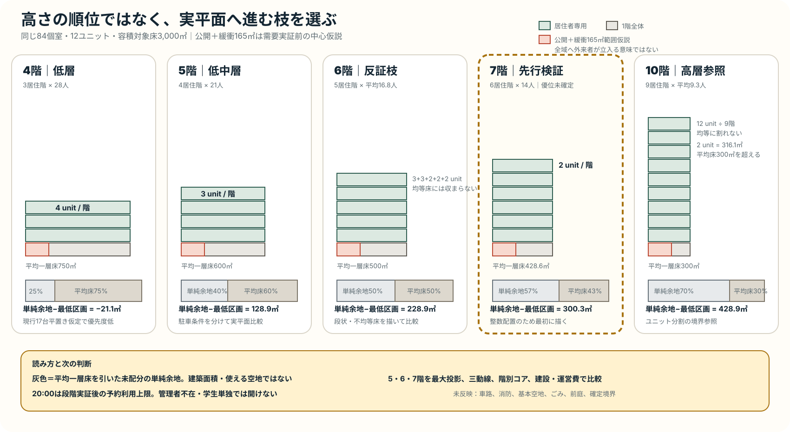
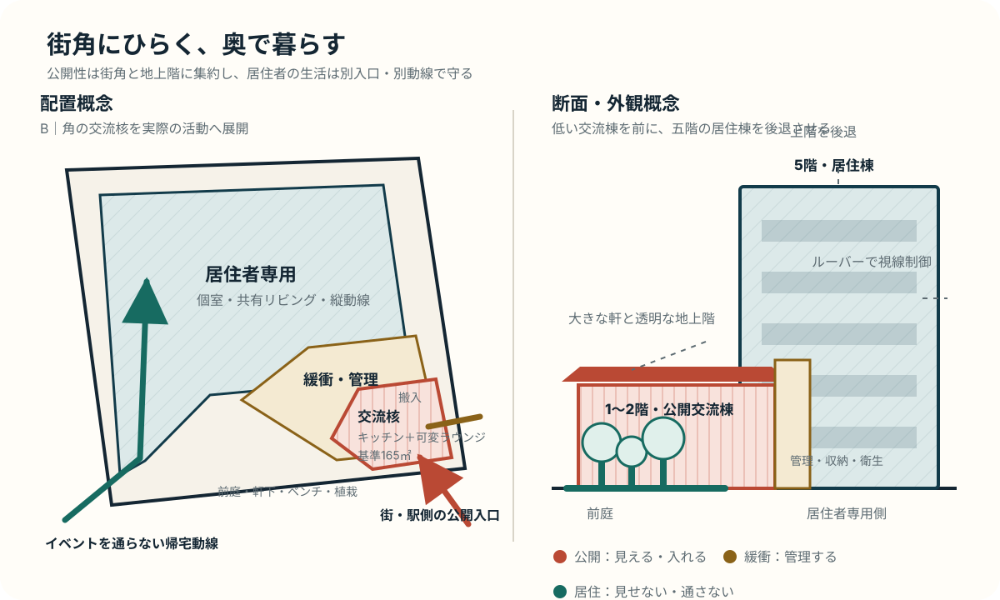
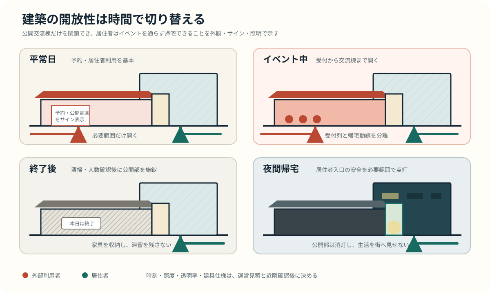
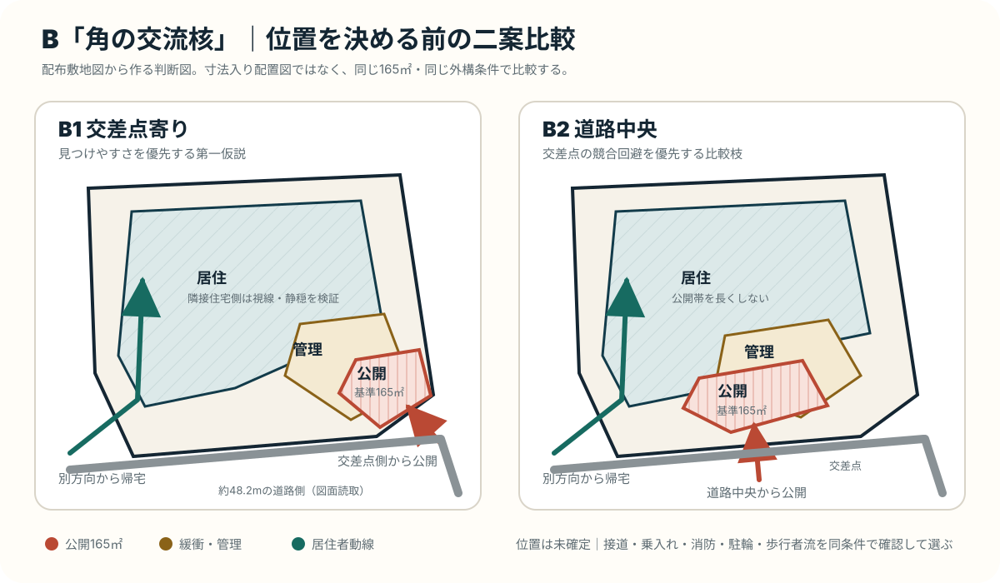
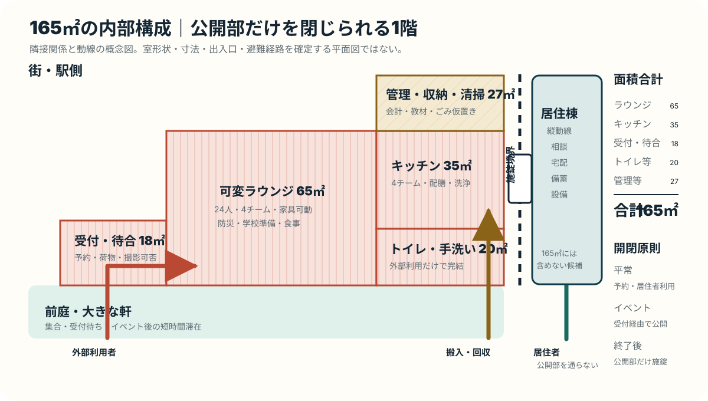
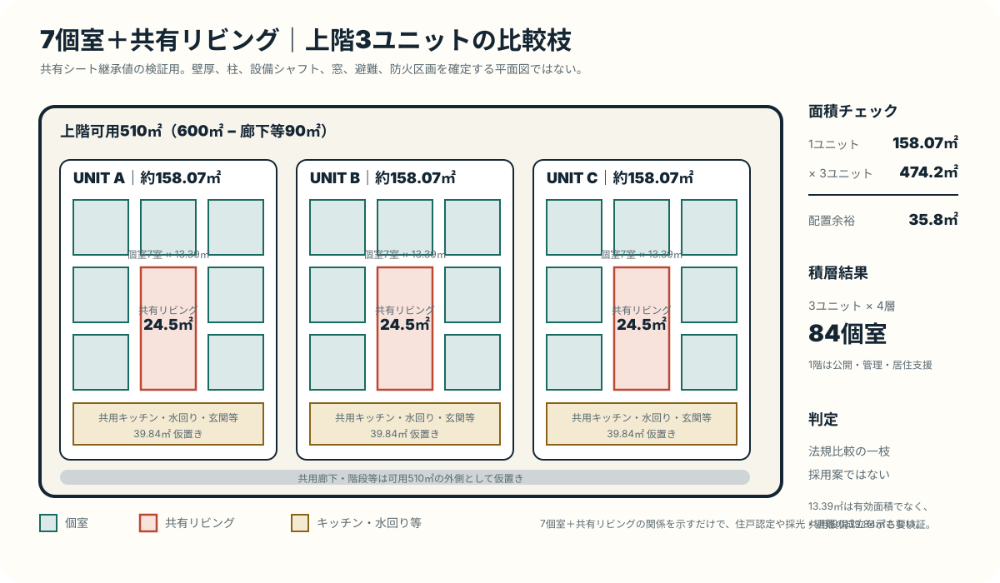

南茨木駅へ阪急3分・モノレール5分
阪急京都線と大阪モノレールの結節点に近く、大阪・京都・北摂へ動きやすい。単一大学の門前ではなく、複数方面への移動を前提にできる立地である。
根拠：同一地番にある現行物件の募集情報。配布資料の一括表記「徒歩3分」より、路線別の現行公開値を優先。Group review · updated 2026.09.04
留学生と国内学生が対等な居住者として暮らし、料理、食事、学習、家事という毎日から互いの文化を学ぶ。大学を越えた「国内留学型の生活基盤」をつくる。
企画の出発点を、配布資料・図面・公開情報で確認できる事実に限定する。将来予測や企画側の評価は、ここでは混ぜない。
阪急京都線と大阪モノレールの結節点に近く、大阪・京都・北摂へ動きやすい。単一大学の門前ではなく、複数方面への移動を前提にできる立地である。
根拠：同一地番にある現行物件の募集情報。配布資料の一括表記「徒歩3分」より、路線別の現行公開値を優先。建蔽率80%、容積率300%。南・東側に道路、北側に水路がある不整形な区画で、隣接マンションや周辺住環境への配慮が必要になる。延床3,600㎡は単純計算で360%となる。
根拠：配布資料「敷地図 A3 1:200」「用地詳細 A3 1:250」。上限値と実際に収まる建築面積は別途検証。課題資料と同じ「東奈良三丁目328番1」の地番表記を持つコスモグラシア南茨木が、139室・2026年1月完成として現行募集されている。表面家賃5.75万〜6.9万円に加え、食費2.97万円、管理費月1.9万円などがかかる。
根拠：UniLife「コスモグラシア南茨木」募集情報。分筆後の登記上の同一性は未確認。立命館大学は2024年4月の学部・研究科移転後、大阪いばらきキャンパスを6学部・7研究科の体制と説明し、大学発行媒体では約1万人超としている。大きな需要母体候補だが、2026年度の厳密な在籍者数ではない。
根拠：立命館大学の6学部・7研究科発表、大学発行「りつめい」。茨木市は、大学・学生を地域の共創主体として位置づけている。2026年度実施計画には、他大学の学生同士のつながりをつくる取組が示されている。
根拠：茨木市「第6次総合計画 第2期実施計画」。寮需要そのものを保証する資料ではない。2023年の茨木市調査では、回答者59人のうち活動後の主な滞在地は市内37.3%、市外62.7%。交通利便性への言及も多かった。
根拠：茨木市「大学生の活動実態等に関する調査」。人数・性別・大学構成に偏りがあり、学生全体へ一般化しない。「留学生向けの部屋が足りない」だけでは、新しい寮を建てる根拠にならない。既存寮が担っている役割と限界を分け、CROSS BASEでなければ埋めにくい空白を特定する。
留学生の70.1%は民間アパート等に住み、48.7%は住居契約で保証人を求められた。住居選びでは家賃・初期費用が77.7%、通学時間・距離が66.9%を占める。一方、授業外で日本人と交流しない留学生は29.4%だった。
根拠：JASSO「令和5年度 私費外国人留学生生活実態調査」（回答7,867人）。全国値であり、南茨木の需要量を直接示すものではない。住宅契約上の代表的な課題は国土交通省の外国人入居円滑化資料も参照。I-Houseは6人単位の生活とレジデント・メンターを組み合わせ、月額64,200円で新入寮生は原則1年間。G-Houseは月額74,200円で、GLA以外は原則1年間である。一方、立命館大学には在学生が国籍を問わず、1学期間だけ国際寮へ入れる短期入寮制度もある。「最初の1年を過ぎると選択肢がない」とは言えない。
根拠：OIC I-House英語公式案内、OIC I-House公式案内、OIC I-Houseガイドブック、OIC Global House公式案内、OIC Global Houseガイドブック、在学生向け短期入寮制度。短期入寮の募集は常時実施ではなく、公式ページで募集時期が案内される。I-Houseは168室に対し、開設した2018年3月の入居予定が41人、2018年度秋学期は81人だった。開設初年度の一時点にすぎず、現在の供給不足を証明する数字ではない。直近の応募数、入居数、落選数、待機者数は公開情報では確認できていない。
根拠：I-House開設時の大学発表、2018年度秋学期の大学発表。古い実績から現在の空室や需要を推定しない。国内学生との混住、共有キッチン、生活ルール、活動を備えた寮では、日本人との人間関係と日本語学習が広がった事例がある。一方、交流は空間の階層、小さな生活単位、公式・非公式の活動、RA等の支援を組み合わせて初めて持続する。
根拠：JASSO掲載の国際寮比較事例、国際学生寮の建築・運営に関する多事例研究。小規模な事例研究を因果関係や全寮共通の結論として一般化しない。2024年度に大学等が把握した日本人学生の海外留学は91,054人で、そのうち1か月未満が60,301人だった。混住生活は海外留学の代替ではないが、語学や異文化環境へ日常的に踏み出す入口になりうる。
根拠：文部科学省「外国人留学生在籍状況調査及び日本人の海外留学者数等について」。ここでいう人数は大学等が把握した留学で、寮への入居意向を示す調査ではない。既存寮と役割を重ねず、未充足の条件に絞る。
既存制度は立命館大学の学生を中心とし、一般入寮は原則1年、在学生向け短期入寮は1学期間である。本計画は複数大学の留学生と国内学生を通常の入居対象とし、本人が希望する場合は複数年暮らせる生活基盤を目指す。
留学生と国内学生を対等な居住者とし、料理、食事、学習、家事を共にする。個室と静かな時間を守りながら、参加を強制しない接点を日常動線に組み込む。
少人数ユニット、共有キッチン、RAの配置と研修、生活ルール、紛争対応、二言語案内、宗教・食・静穏への配慮までを一つの居住サービスとして設計する。
この案の核は「留学生と国内学生が同じ建物に住むこと」だけではない。互いの異なる生活知識と留学目的を、日常の相互学習へ変えるという仮説である。
留学生には日本での住居・契約・生活支援、国内学生には語学や留学準備の機会が必要になる。
OICの既存寮にも国内学生と留学生の混住がある。食事・家具・防犯等の設備も既存住宅で提供される。
日本語・日本文化・生活知識と、外国語・異文化理解を交換できれば、日常生活そのものが国際教育になる。
共有リビングと外部利用ゾーンを分け、多言語防災、学校への学生ペア派遣、教え合う食卓を小さく実証する。
SWOTは、内部の強み・弱みと外部の機会・脅威を並べる分析。ここでは結論を正当化せず、現状案を次に進める条件と、止める条件を見える形にする。
組み合わせごとに、次の一手を一つの方向へ絞る。
交流そのものを目的にせず、それぞれが抱える現実的な不安や不足へ応答する。価値が両立しない場合は、まず居住者の安全と生活を優先する。
ピンクを外部利用、グリーンを居住者専用として色分けし、交流の入口、公開範囲、時間、管理責任を空間と一緒に決める。
「低いほど地域へ開く」という前提を外し、室数・公開床・駐車条件を揃えて足元の余地と管理負担を比べる。

21人／階で生活単位をまとめやすい一方、駐車・駐輪の最低区画後の単純余地は約128.9㎡。車路等を入れた成立は未確認。
12ユニットを5居住階へ均等に割れないため、3・3・2・2・2組の段状・不均等床を描き、最大投影面積で比較する。
2ユニット × 6居住階へ整数配置できるため7階を最初に描く。昇降、避難、構造、設備、管理巡回、階数別の建設・運営費を入れて5・6階と比較する。
B「角の交流核」を、外観・建物形状・外構へ展開する第一仮説。

街側角に1〜2階の交流棟と前庭を置き、居住棟を奥または上階から後退させる。階数は5・6・7階を比較し、公開部だけを閉鎖できる構成にする。
公開部は透明な地上階と大きな軒、居住部はルーバーと奥行きで視線を制御する。高い柵ではなく、植栽・舗装・入口管理で境界をつくる。
24人の可変ラウンジ、交流キッチン、受付、トイレ、管理・収納を小さく検証する。これは目的共用部810㎡の内訳であり、公開床の追加ではない。廊下等15%を一律控除する比較では、寄宿舎案では345㎡、共同住宅案では464㎡を1階の居住支援等へ残せる。
ガラス面だけで開放性を演出せず、平常日・イベント中・終了後・夜間帰宅の入口、施錠、サイン、照明を分ける。

居住者と予約利用を基本にし、その日に使える場所と参加条件を二言語サインで示す。
前庭を集合・待合・退出に使い、受付列と居住者の帰宅動線を交差させない。
家具を収納して交流棟と前庭の演出照明を落とし、居住者入口の安全照明だけを残す。
配布敷地図に接続した位置比較。位置は未確定。

入口、前庭、サインを一か所へ集めやすい。隅切り、車両乗入れ、消防、来場者駐輪が競合すれば不成立。
交差点から離せる可能性がある一方、公開帯と管理範囲が長くなりやすい。
室数、公開床、駐輪、搬入、ごみ、消防、前庭を揃え、B1だけを有利に描かない。
65＋35＋18＋20＋27＝165㎡。外部利用者・居住者・搬入を分離する。

予約、荷物、撮影可否を入口で確認し、外部利用者を居住部へ迷い込ませない。
食材、教材、清掃、ごみ仮置きを短くつなぎ、参加者の列と交差させない。
イベント終了後も、居住者は別入口から帰宅し、居住棟を独立して運用できる。
寄宿舎ルート91室を実配置へ近づけるため、1階を公開・管理・居住支援、上階を3ユニットずつとする。3ユニット×4層＝84個室で、採用案ではない。

個室13.39㎡を退避先とし、共有リビングは1人3.5㎡の会話・食事・休息の場とする仮説。個室面積は壁・設備控除前。
階段、エレベーター、設備シャフト、避難、男女区画、全室採光を実平面で確認する。
84室、月10万円、稼働95%、現行運営費。前者は建設費9億7,410万円、後者は設備を積み上げた建設費10億2,444万円。7%に必要な月額は約18.90万円/室と約19.37万円/室。
「国際交流」を目的にせず、地域と学生が互いに教え合う具体的な活動から関係をつくる。
地域住民から避難経路と地域知を学び、学生がやさしい日本語・多言語の防災マップへ整理する。
留学生と日本人学生がペアで学校へ行き、日本と海外の生活文化を同じテーマから伝える。
一人一つ、言葉・料理・生活知識を交換し、全員が先生と留学生になる。「一皿ずつ、先生になる。」
既存施設で12人→18人→24人を段階的に再現し、混雑時は面積を増やす前に予約・班編成・家具・収納・運営人数を直す。
受付列・最小通路・居住動線との交差、調理待ち、家具転換、清掃、役割別稼働、人件費を含む総費用を時系列で記録する。
避難閉塞・専用部侵入は即時停止。食事制限、撮影、個人情報、責任者、保険、許可・届出を確認できない段階では公開しない。
運営で解けない寸法だけを165㎡へ戻す。同じ人数条件を2回再現し、改善後も同じ問題が起きた時に設計条件へ採用する。
下図は確認済みの敷地条件を抽象化した公開用の模式図であり、測量図・配置図・権利境界を示すものではない。
正確な配置検討は1:200敷地図の分筆境界を基準にする。建蔽率80%は上限であり、800㎡が自動的に建つという意味ではない。市基準では300㎡以上の敷地は道路側1.0m以上、1,000㎡以上なら1.5m以上の基本空地が必要になるため、確定測量と配置の照合を先に行う。
5階・延床3,600㎡・24ユニット・168個室を算術上の比較案に置いた。専有部2,250㎡を割った13.39㎡は壁・柱・設備・収納控除前である。寄宿舎なら延床が約600㎡、共同住宅でも専有部と目的共用部の合計が約60㎡、容積対象上限を超える可能性がある。
道路側へ外部利用ゾーンを開き、居住者専用部と入口・時間・動線を分ける。水路・住宅側は静穏とプライバシーを優先する。騒音解析や近隣協議前の方向性である。
配布説明資料に従い、建設費と土地取得費7億円を合計した投資総額で比較する。168室案は満室なら数値目標を超えるが、法規・実配置が未成立で、稼働率95%では利回り7%に届かない。
| 評価ケース | 投資額 | 年間利益 | 回収 | 利回り | 15年 / 7% |
|---|---|---|---|---|---|
| 168室・満室 収支上限。法規・実配置未成立 | 18億5,410万円 | 1億3,389.9万円 | 13.85年 | 7.22% | 理論上限 |
| 168室・稼働率95% 収支上限。法規・実配置未成立 | 18億5,410万円 | 1億2,482.7万円 | 14.85年 | 6.73% | 利回り未達 |
| 寄宿舎91室・稼働率95% 行政確認前の比較値 | 16億7,410万円 | 4,762.5万円 | 35.15年 | 2.84% | 条件外 |
| 共同住宅99戸・稼働率95% 行政確認前の比較値 | 18億3,610万円 | 5,421.3万円 | 33.87年 | 2.95% | 条件外 |
家賃10万円・稼働率95%の年間利益を7%で割り、許容できる総投資を算出した。負の土地上限は、土地を0円としても現在の建設費だけで7%へ届かないことを示す。
| 比較案 | 7%許容投資 | 必要削減 | 削減率 | 建設後の土地上限 |
|---|---|---|---|---|
| 168室上限 法規・実配置未成立 | 17億8,324.3万円 | 7,085.7万円 | 3.82% | 6億2,914.3万円 |
| 寄宿舎91室 | 6億8,035.7万円 | 9億9,374.3万円 | 59.36% | −2億9,374.3万円 |
| 共同住宅99戸 | 7億7,447.1万円 | 10億6,162.9万円 | 57.82% | −3億6,162.9万円 |
| 7個室Unit 84室 | 5億7,775.7万円 | 10億9,634.3万円 | 65.49% | −3億9,634.3万円 |
公開されている必須費用だけを年額化し、不明費用は0円扱いにせず「未算入」とした。費目が同じではないため、単純な安い順ではなく価格仮説の距離を見る。
| 比較対象 | 年間の確認可能範囲 | 含む主な費目 | 未算入・判断 |
|---|---|---|---|
| OIC I-House | 継続77.04万円 既知の初年度最低84.54万円 | 居住、光熱水、ネット、寝具、入寮・清掃・事務 | 火災保険等は未算入 |
| OIC G-House | 継続89.04万円 | 居住、光熱水、ネット、寝具 | 初期諸費用は別案内 |
| コスモグラシア南茨木 | 初年度主要費用 138.84〜153.24万円 | 家賃、食費、管理費、1年入館金 | 専有部光熱、保証、補償等は未算入 |
| 今回案 | 家賃だけで年120万円 7%達成に必要な家賃だけで年174.99〜207.79万円 | 家賃のみ | 食事・管理等を加えた総額は未決 |
賃料、売上歩合、運営受託、時間貸しは、売上とリスクの帰属が違う。候補者・条件書・所有者負担費がない段階では契約前は0円とする。
| 形態 | 所有者の収入 | 主なリスク | 採用条件 |
|---|---|---|---|
| 固定賃貸借 | 固定賃料・共益費 | 空室、原状回復、所有者工事 | 面積・期間・保証を示す契約案 |
| 最低保証＋歩合 | 最低保証＋売上歩合 | 売上監査、保証履行 | 分母・控除・報告方法を明記 |
| 運営委託 | 食堂・イベント売上 | 人件費、食材、光熱、赤字も所有者 | 独立損益で黒字を確認 |
| 短期利用・ポップアップ | 利用料 | 稼働変動、受付、清掃 | 12か月の実績後に反映 |
3つの割合は原典・分母・業務範囲が未確認。法規比較値のうち投資効率がやや高い共同住宅99戸で、重複しない読み方だけを比較した。
| 感度ケース | 年間利益 | 土地込み利回り | 7%必要月額 |
|---|---|---|---|
| 現行 管理10%＋固定3,600万円＋修繕 | 5,421.3万円 | 2.95% | 17万3,162円 |
| 2%が管理料を置換 固定費・修繕は維持 | 6,324.2万円 | 3.44% | 15万9,027円 |
| 15%を包括費として置換 管理＋固定費を置換、修繕は別 | 8,457.0万円 | 4.61% | 14万5,821円 |
| 20%を包括費として置換 管理＋固定費を置換、修繕は別 | 7,892.7万円 | 4.30% | 15万4,935円 |
公開情報は2026年9月4日時点の確認。リンクは事実の出典であり、企画の成功や需要を保証するものではない。
学生本人の住居選択と、保護者の費用・安全・支援条件を分離して整理した。全国値は背景として扱い、南茨木の確認済み需要とは表示しない。
通い、自宅外通学、下宿の母数を分け、認知から有料申込までを編集可能にした。仮申込ページは個人情報を取らず、端末内にも保存しない試作である。
チームの非公開資料へDay2の条件付き試算と締め判断を反映。収益シートの「Day2判断表」で168・84・91・99室、運営費4ケース、7%許容投資を数式化した。07:37 JSTの5・6・7階比較はローカル正本までで、共有資料には未同期。公開用の判断記録は最新ワークショップ方針に残す。
共創のまちづくり、公共交通と連動した拠点形成の方向を確認。学生寮の需要や収益は扱わない。
大学・学生との共創や、大学横断のつながりをつくる取組を確認。居住意向とは別に検証が必要。
2024年4月の移転後、6学部・7研究科体制になったことを確認。2026年度の厳密な在籍者数は別途確認する。
2024年度契約物件のOIC平均は家賃・共益費合計66,976円。今回の家賃設定への支払意思を直接証明するものではない。
139室、2026年1月完成、設備、食事、管理、募集条件を確認。募集情報は更新されるため最終提案前に再確認する。
分譲棟と学生マンションの一体開発、阪急3分・モノレール5分、両棟の関係を確認。仮想再提案として扱う根拠。
回答者59人の活動後滞在地と自由記述を確認。標本の偏りがあるため、市内大学生全体へ一般化しない。
近隣に既存の地域活動拠点があることを確認。食・文化イベントの開放ゾーンは、既存施設との役割分担を検討する。
いま必要なのはコピーの磨き込みより、成立条件の確認。上から順に合意すると、平面と収益を無駄なく往復できる。
168室の収支を磨く前に、成立する延床と室数を確定する。
階数と角位置を一度に決めず、同じ6セルで外構条件を比べてから成立室数へ戻す。
家賃10万円でも、法規比較値は土地込み2.84〜2.95%。運営実費と支払意思を同じ商品条件で確かめる。
外部回答前は確定しない。そのうえで、コンセプトと基本構想は残し、成立条件の確認へ進む。
防災、学校派遣、お互い食堂を、参加任意・責任明確・段階実証で街へ開く。
84室、公開165㎡、駐車駐輪条件を揃えた6セルを描き、7階を最初に反証する。優位案ではない。
168室、7%達成、建設費11億5,410万円、テナント利益を確定表現しない。7%目標を維持するなら、事業条件を変える。